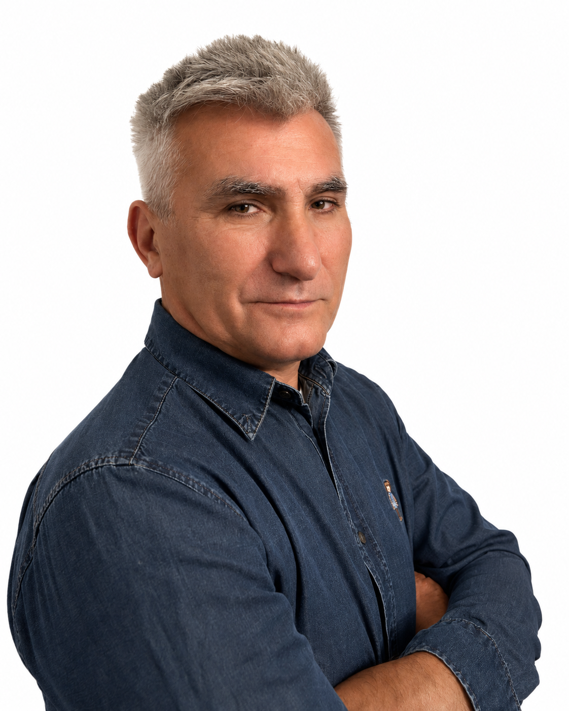
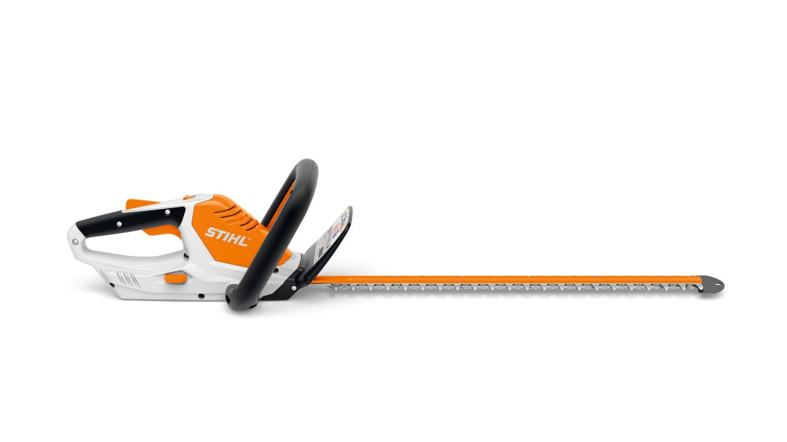
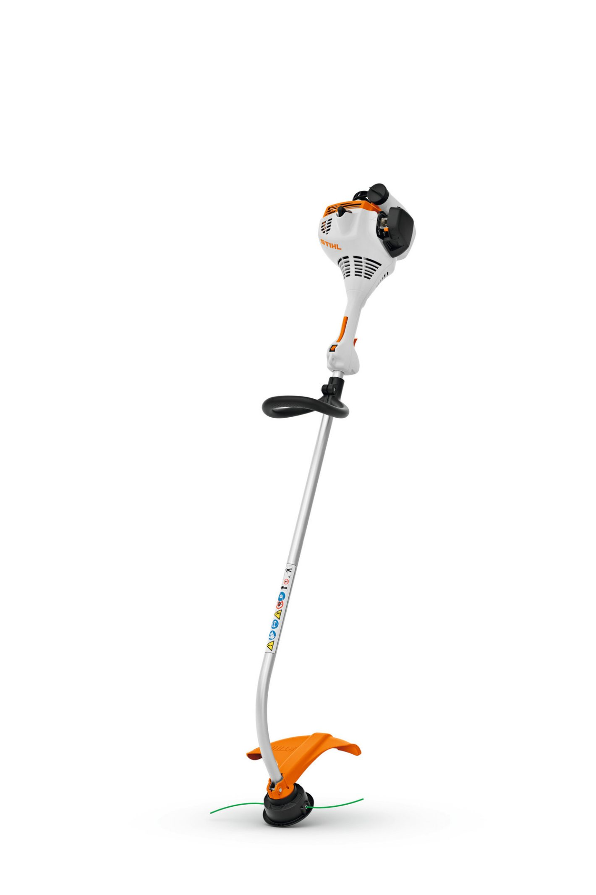
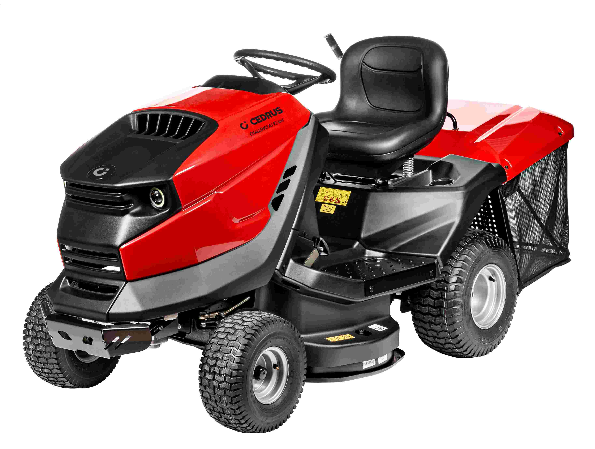

Profesjonalne koszenie i kompleksowa pielęgnacja
terenów zielonych

Cześć! Mam na imię Jarosław i od lat pasjonuję się pielęgnacją zieleni. Osobiście nadzoruję większość prac i dbam o to, aby każdy trawnik wyglądał reprezentacyjnie.



Jesteśmy prężnie rozwijającą się firmą rodzinną w województwie łódzkim świadczącą kompleksowe usługi sprawne i profesjonalne. Posiadamy doświadczenie i umiejętności z zakresu ogrodnictwa, uprawy roślin, ekologii, nowoczesnych technologii w pielęgnacji terenów zielonych. Nasze usługi kierowane są zarówno do osób prywatnych, jak i do małych przedsiębiorstw i dużych firm.
Dlaczego warto nas wybrać?
Aby zapewnić najwyższą jakość świadczonych usług, opieramy naszą pracę na niezawodnym i nowoczesnym sprzęcie. Nasz stale modernizowany park maszynowy pozwala nam sprostać nawet najbardziej wymagającym zleceniom, niezależnie od skali i specyfiki terenu.
Nasza firma zajmuje się pielęgnacją terenów zielonych oraz odśnieżaniem.
Zgłoś się do nas jeśli twój ogródek, parking, trawnik lub inny teren zielony potrzebuje:
Jedną z naszych usług jest kompleksowa pielęgnacja terenów zielonych przy firmie. Zadbana przestrzeń wokół budynku to ważny element wizerunkowy przedsiębiorstwa.
Masz pytania lub chcesz umówić się na wycenę? Zadzwoń, a my zajmiemy się resztą!!!
Zanim wyślesz wiadomość, zachęcamy do kontaktu telefonicznego – dzięki temu szybciej omówimy szczegóły.